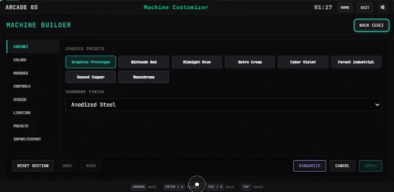
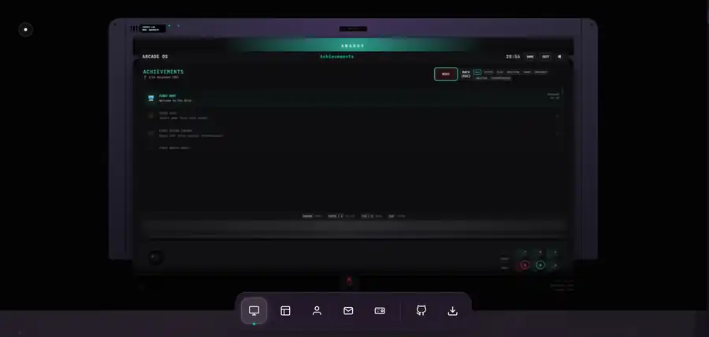
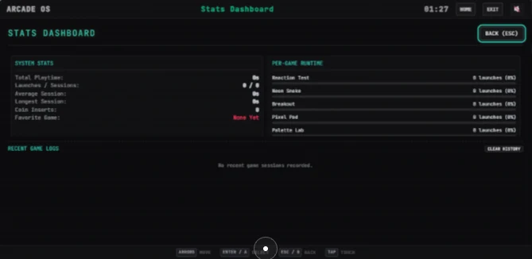
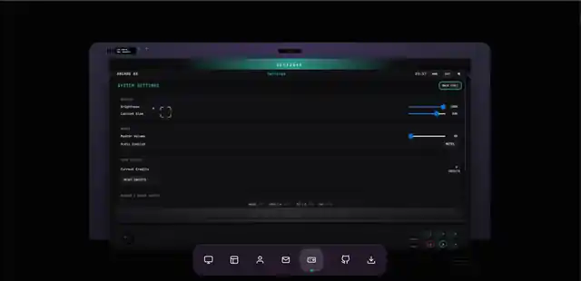

ArcadeOS
A browser operating system hidden inside a custom arcade cabinet, engineered as the interactive centerpiece of this portfolio.
Best experienced on desktop or laptop. The live cabinet is intentionally disabled on mobile and tablet so the games, audio, viewport, keyboard controls, and cabinet interactions remain accurate and reliable.

A portfolio feature built like a product.
Challenge
Build a memorable interactive system without turning the portfolio into an inaccessible demo, loading a large framework, trapping users, or letting game state and listeners leak between routes.
Solution
A small platform layer coordinates storage, routing, app lifecycle, audio, hardware feedback, and unified desktop input. Games and system tools mount into one controlled screen and are destroyed when the user returns home.
One shell, isolated feature engines.
- Module loading: system tools are dynamically imported and cached after first use.
- Game lifecycle: every app receives a shared event bus, mounts into one view, and tears down timers, listeners, and animation frames on exit.
- Input model: keyboard, pointer, cabinet, and gamepad controls emit normalized Arcade events, so routes and games do not depend on one desktop input device.
- Persistence: settings, saves, stats, achievements, profile, sound, and customizer presets live in explicit local storage domains with migration and backup safety.
The interface evolved together with the cabinet.




Restraint over dependency weight.
Vanilla platform
Native modules, Custom Events, Canvas, Web Audio, Gamepad API, and browser storage keep the runtime inspectable and small.
Owned listeners
Route and app listeners are tagged by owner, then removed as a group when their screen closes.
Safe resets
Backup export and domain-specific resets prevent one settings action from deleting credits, saves, profiles, or customization presets unexpectedly.
Desktop-first delivery
The interactive cabinet is enabled only on desktop and laptop environments with a fine pointer, hover support, and sufficient viewport width. Mobile visitors retain the complete portfolio and case study without receiving a compromised game runtime.
Performance and access are part of the system.
Accessibility
- Semantic controls and visible focus states.
- Keyboard, cabinet, pointer, and gamepad parity on supported desktop devices.
- Route and game announcements.
- Reduced motion and reduced audio support.
- Mobile visitors receive clear desktop-only messaging instead of a broken control surface.
Performance
- Lazy system modules and no giant UI dependency.
- Animation frames stop when the cabinet is idle or off-screen.
- Games cancel loops and listeners on destroy.
- Optimized media and stable ratios keep page rendering predictable.
- The full ArcadeOS runtime is intentionally unavailable on mobile and tablet; desktop and laptop provide the complete experience.
Regression coverage follows the user journey.
Automated browser tests cover boot, desktop entry, launcher focus, every system route, games and creative tools, module recovery, keyboard and gamepad mapping, storage safety, repeated route teardown, portfolio links, and responsive overflow. Mobile and tablet QA verifies that ArcadeOS entry stays blocked while the portfolio, case study, NIMO guidance, and desktop-only notice remain usable.
A technical proof piece visitors can actually use.
ArcadeOS turns the desktop portfolio itself into evidence: interaction design, state management, performance engineering, game loops, accessibility, persistence, testing, and product storytelling operate together in one shipped experience. Mobile visitors can explore the full case study and then continue the live experience from a desktop or laptop.